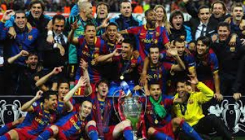
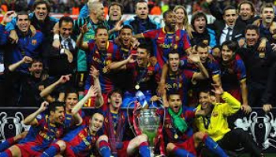
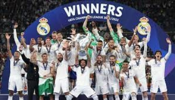
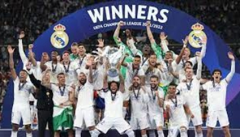

Previous Tournament Winners
2022-23 Manchester City Defeats Inter Milan 1-0.
2021-22 Real Madrid Defeats Liverpool 1-0.
2020-21 Chelsea Defeats Manchester City 1-0.
2019-20 Bayern Munich Defeats Paris Saint-Germain 1-0.
2018-19 Liverpool Defeats Tottenham Hotspur 2-0.
2017-18 Real Madrid Defeats Liverpool 3-1.
2016-17 Real Madrid Defeats Juventus 4-1.
2015-16 Real Madrid Defeats Atletico Madrid 1-1(5-3 Penalties).
2014-15 Barcelona Defeats Juventus 3-1.
2013-14 Real Madrid Defeats Atletico Madrid 4-1.
2012-13 Bayern Munich Defeats Borussia Dortmund 2-1.
2011-12 Chelsea Defeats Bayern Munich 1-1(4-3 Penalties).
2010-11 Barcelona Defeats Manchester United 3-1.
2009-10 Inter Milan Defeats Bayern Munich 2-0.
2008-09 Barcelona Defeats Manchester United 2-0.
2007-08 Manchester United Defeats Chelsea 1-1(6-5 Penalties).
2006-07 AC Milan Defeats Liverpool 2-1.
2005-06 Barcelona Defeats Arsenal 2-1.
2004-05 Liverpool Defeats AC Milan 3-3(3-2 Penalties).
2003-04 Porto Defeats Monacco 3-0.
 

 
